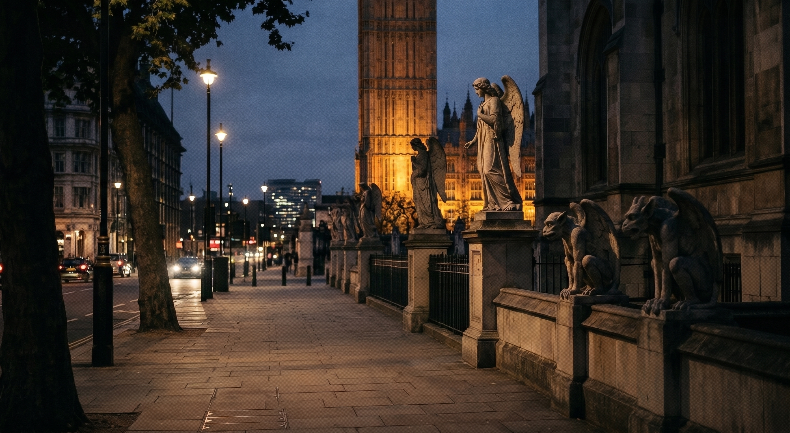

Estátuas do Big Ben mudam de posição durante a madrugada
Moradores relatam que as gárgulas "parecem mais perto" a cada manhã. Especialistas recomendam não piscar perto delas.

Moradores da região de Westminster estão intrigados após relatarem mudanças inexplicáveis na posição de algumas estátuas localizadas próximas ao Big Ben.
Segundo testemunhas, as figuras permanecem imóveis durante o dia, mas parecem ocupar posições diferentes quando observadas novamente na manhã seguinte.
Cada vez mais perto
Fotografias feitas em noites consecutivas mostram que algumas das estátuas parecem estar progressivamente mais próximas das calçadas e das entradas de prédios da região.
Funcionários responsáveis pela manutenção dos monumentos afirmam que nenhuma das peças foi removida ou reposicionada oficialmente.
“Ontem ela estava perto da torre. Hoje estava praticamente olhando para a minha janela.” — morador de Westminster
Especialistas chamados para analisar o fenômeno fizeram uma recomendação incomum: pessoas que encontrarem uma das figuras devem manter contato visual constante e evitar piscar enquanto estiverem próximas delas.